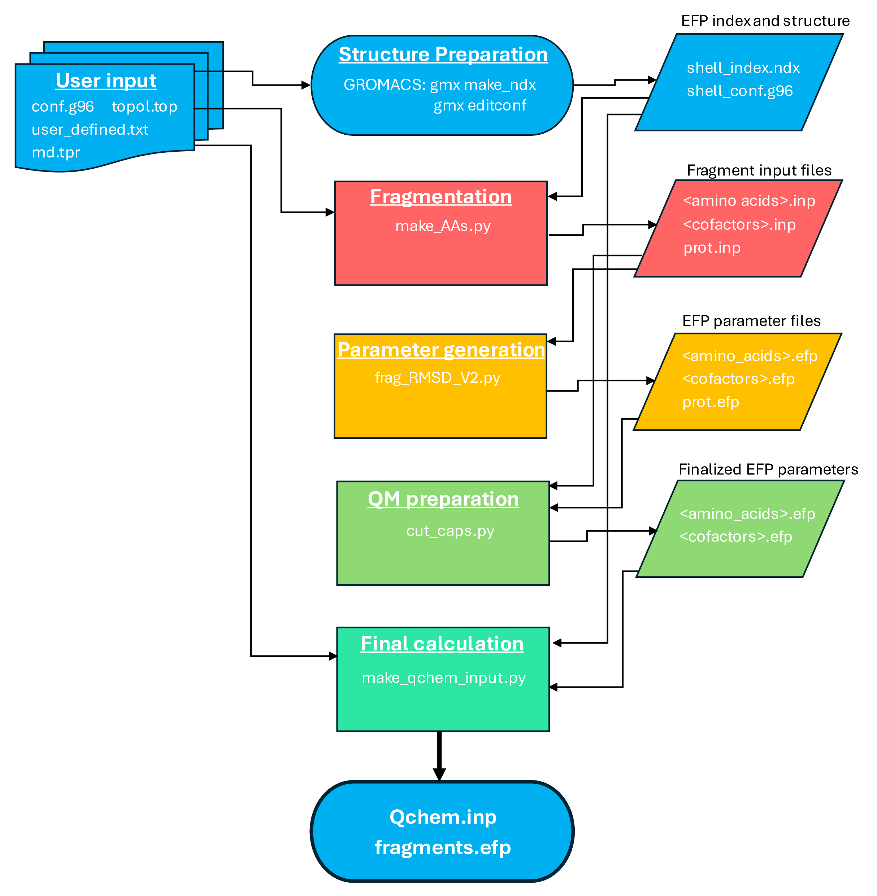
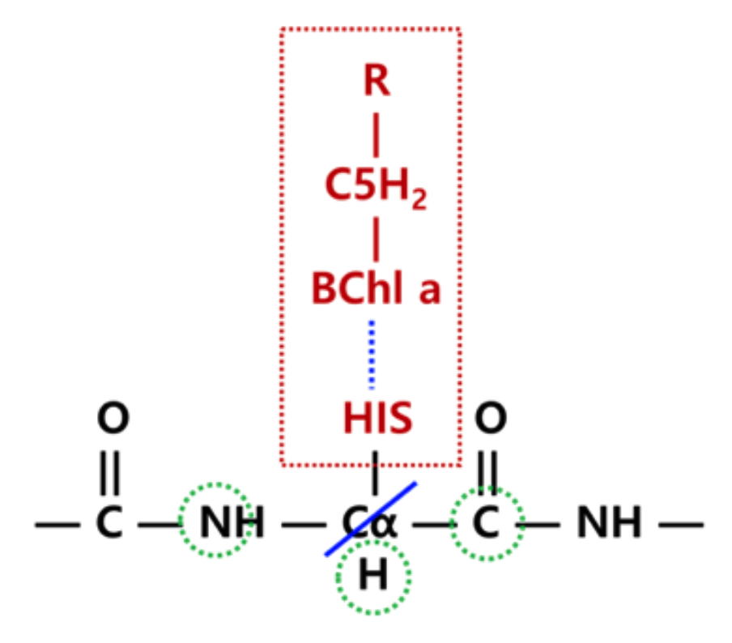

QM/EFP calculations using BioEFP and FlexEFP
Introduction
QM/EFP methods are powerful tools for describing photo- and redox-chemistry in condensed phases, see e.g., Biological chromophores. However, setting up QM/EFP calculations for complex systems is not trivial and time-consuming. This tutorial presents a computational workflow that helps interested users to set up QM/EFP calculations of photoactive proteins in a format suitable for calculations in Q-Chem. It is assumed that the initial structures for QM/EFP calculations are obtained from a GROMACS MD trajectory. GAMESS is used for computing EFP parameters.
The workflow was tested on several photosynthetic pigment-protein complexes (FMO, PS1, WSCP). While the workflow is reasonably general and can be adapted to other biological and materials systems, the QM/EFP calculations are not black-box procedures and the user will need to make decisions based on the system specifics and the properties of interest.
Preliminaries
The following software is required:
GROMACS
GAMESS
Q-Chem
libEFP
Python 3 (with numpy)
To start with, you will need the following GROMACS files:
structure file (
.g96)topology file (
.top)binary run input file (
.tpr)
If you wish to use the FlexEFP scheme as described in Flexible EFP paper, you also need a library of precomputed EFP potentials. The parameter database from the Flexible EFP paper can be found here. You can also prepare and use your own fragment library, with very minor modifications in the workflow.
Workflow overview
{kind=link}

The workflow leads the user through the following steps:
The scripts and test files used in this workflow can be found in QM/EFP workflow The utilized scripts are:
make_AAs.py— prepares GAMESS MAKEFP input files for EFP fragmentsfrag_RMSD_V2.py- (optional) searches the EFP fragment library to obtain EFP parameters without running GAMESS jobscut_caps.py— trims EFP parameter files by removing capping hydrogens and correcting chargesmake_qchem_input.py— assembles the final Q-Chem QM/EFP input file
FMO protein
The Fenna-Matthews-Olson (FMO) protein is used as an example system throughout this tutorial. Preparation of the QM and EFP regions follows the work by Kim et al.
FMO is a trimeric protein with eight bacteriochlorophyll a (BChl) pigments in each monomer. FMO facilitates energy transfer via excitonic couplings across these eight BChls.


In the present example, water molecules more than 15 Angstroms from the protein surface have been removed.

This tutorial assumes that molecular dynamics and constrained QM/MM geometry optimizations have been already performed on the system. Constrained QM/MM geometry optimizations have been shown to be essential for accurate predictions of optical spectra and redox properties. However, this step is not covered here and it is left to the user to perform if needed.
Note
The provided .g96 file (bchl361-79002.g96)
contains QSL and LA residues, corresponding to
“quantum” waters (water molecules included in the QM region during QM/MM optimizations)
and link atoms that were utilized in QM/MM optimizations, respectively. These are left
over from the QM/MM optimization step and are not required for any of the scripts in this tutorial.
Defining QM and EFP regions
In the present example, the QM/EFP calculation will be set up for the third BChl (residue number 361) in the active (QM) region.
EFP region
While it is possible to include all non-QM atoms in the EFP region, this approach can be computationally expensive for larger proteins for computing EFP parameters and performing QM/EFP calculations. A practical approach is to define an EFP region that includes all residues within a particular distance from the QM region. Here, we include every amino acid, non-QM BChl, and water molecule containing at least one atom within 15 Angstroms of the BChl chlorin ring.
Note
A single snapshot can be extracted from a GROMACS MD trajectory in .g96 format using:
gmx trjconv -s md_50.tpr -f md_50.trr -o snapshot_50000.g96 -dump 50000
Note
Extracting larger systems can occasionally cause columns to be misaligned when the residue ID passes from 9999 to 10000. This misalignment can make the structure appear incorrectly in VMD or other visualizers (e.g., “sheets” of waters with misread coordinates). Though it shouldn’t matter for this tutorial, you can fix the problem by realigning the columns. Column reformatting script is an example of a script that can fix this problem.
To determine which residues constitute the EFP region, we use the gmx select
command. First, create an index file defining the BChl headring group containing the
atoms of the chlorin ring:
Note
The BChl chlorin ring (headring) is defined by the following atom names:
MG CHA CHB HB CHC HC CHD HD NA C1A C2A H2A C3A H3A
C4A CMA HMA1 HMA2 HMA3 NB C1B C2B C3B C4B CMB HMB1 HMB2 HMB3 CAB OBB CBB HBB1 HBB2 HBB3 NC C1C
C2C H2C C3C H3C C4C CMC HMC1 HMC2 HMC3 CAC HAC1 HAC2 CBC HBC1 HBC2 HBC3 ND C1D C2D C3D C4D CMD
HMD1 HMD2 HMD3 CAD OBD CBD HBD CGD O1D O2D CED HED1 HED2 HED3
The following code generates the index file (index.ndx) containing all standard GROMACS
index groups with the new headring group appended:
1gmx make_ndx -f formed_bchl361-79002.g96 <<EOF
2r 361 & a MG CHA CHB HB CHC HC CHD HD NA C1A C2A H2A C3A H3A C4A CMA HMA1 HMA2 HMA3 NB C1B C2B C3B C4B CMB HMB1 HMB2 HMB3 CAB OBB CBB HBB1 HBB2 HBB3 NC C1C C2C H2C C3C H3C C4C CMC HMC1 HMC2 HMC3 CAC HAC1 HAC2 CBC HBC1 HBC2 HBC3 ND C1D C2D C3D C4D CMD HMD1 HMD2 HMD3 CAD OBD CBD HBD CGD O1D O2D CED HED1 HED2 HED3
3name 26 Headring
4q
5EOF
Warning
Make sure to adjust the code above to your system’s active region!
Here is a visualization of the atoms contained in the newly created index group:

The following command selects all residues containing at least one atom within 1.5 nm
(15 Angstroms) of the headring group and writes them to a new index file:
gmx select -s md_80.tpr -n index.ndx -f bchl361-79002.g96 -select
'same residue as within 1.5 of group "Headring"' -on shell_index.ndx
The output shell_index.ndx contains exactly one index group defining the EFP region.
Next, extract the EFP region into a new structure file:
gmx editconf -f formed_bchl361-79002.g96 -n shell_index.ndx -o shell_bchl361-79002.g96
Note that no output group needs to be specified since shell_index.ndx contains only one
group. The resulting EFP shell surrounding the headring looks like this:

Note
The QM region will include the entire BChl, but the EFP region is defined by distance to the chlorin ring only.
QM region
Warning
Defining the QM region is system-specific. The user must prepare a text file containing all atoms of the QM region as well as pairs of atoms defining any covalent boundaries between the QM and EFP regions.
An example file prepared for the third BChl in FMO is provided:
qm_defined.txt. This file can be
constructed by copying the corresponding lines from the all-atom (not EFP shell!) .g96 file, i.e.,
bchl361-79002.g96 in our case.
The QM_atoms section should contain all QM atoms, not including capping hydrogens for covalent QM-EFP
boundaries.
Note that the atom indexes MUST match those in the all-atom structure file, but the coordinates
do NOT need to match, such that the same qm_defined.txt can be used for multiple structural snapshots of
the same system.
That is, if you are planning to run multiple QM/EFP calculations on identically-built
structures (e.g. different times of a single MD trajectory), then you can reuse the same
QM-defining text file.
1QM_atoms
2 290 HID CB 4423 7.642829418 5.747635365 6.631662846
3 290 HID HB1 4424 7.690435886 5.791911602 6.719151974
4 290 HID HB2 4425 7.702376842 5.734309196 6.541343212
5 290 HID CG 4426 7.616473675 5.602392197 6.675217152
6 290 HID ND1 4427 7.564018726 5.549627781 6.790104389
7 290 HID HD1 4428 7.526696682 5.608877659 6.862887859
8 290 HID CE1 4429 7.573244572 5.417556286 6.787623882
9 290 HID HE1 4430 7.525365353 5.356580257 6.862813473
10 290 HID NE2 4431 7.630198002 5.375784874 6.671539783
11 290 HID CD2 4432 7.659914494 5.495519638 6.606870174
12 290 HID HD2 4433 7.729931355 5.498696804 6.524702549
13 361 BCL MG 5807 7.683570385 5.063692570 6.584101200
14 361 BCL CHA 5808 7.531836033 5.139747143 6.278742790
15 361 BCL CHB 5809 7.987795353 5.096710682 6.448209286
16 361 BCL HB 5810 8.083442688 5.096199036 6.395521641
17 361 BCL CHC 5811 7.814235210 5.021772861 6.903957844
18 361 BCL HC 5812 7.851527691 5.018221855 7.006530285
19 361 BCL CHD 5813 7.359744549 5.040185928 6.723926067
20 361 BCL HD 5814 7.258452892 5.027849674 6.762816906
21...
The “QM-MM” boundary section is optional and should contain pairs of atoms for each
covalent boundary, with the QM atom listed first. The given example of qm_defined.txt
contains only one QM-MM boundary, but a second boundary could be included like this:
1QM-MM
2boundary 1
3 290 HID CB 4423 7.642829418 5.747635365 6.631662846
4 290 HID CA 4421 7.514162540 5.827141285 6.594927311
5boundary 2
6 290 HID CB 4423 7.642829418 5.747635365 6.631662846
7 290 HID HB1 4424 7.690435886 5.791911602 6.719151974
Example: QM region for the third BChl in FMO
By trial and error we found that including the Mg-coordinating amino acid residue in the QM region in QM/EFP calculations helps SCF convergence and makes excitation energies more reliable. Thus, the QM region will include all atoms of the BChl (residue BCL 361) as well as atoms from the nearby histidine that coordinates the BChl Mg atom shown below.

The full residues 361 (BCL) and 290 (HIS) are shown above; however, only the side chain of the histidine is included in the QM region. Specifically, residue atoms from \(C_{\beta}\) onward are included, while backbone atoms from \(C_{\alpha}\) onward remain in the EFP region:

A covalent QM-EFP boundary is therefore defined between \(C_{\beta}\) and \(C_{\alpha}\). The scripts automatically cap the QM region with hydrogen atoms positioned along the boundary bond, so the QM region in the QM/EFP calculation looks like this:

Preparation of the EFP fragment for the boundary histidine is discussed in QM-EFP boundary fragments.
Fragmentation of the EFP region
Now we need to prepare EFP fragments for our system. In EFP region section we have already
created a shell_bchl361-79002.g96 file containing atoms belonging to the EFP region. Here we will split
polypeptide chains and other large residues into EFP fragments.
Splitting protein into EFP fragments
Because proteins tend to be continuous chains, covalent bonds between neighboring amino acids have to be broken for fragmentation. From a bonding standpoint, it is better to split fragments along less polar \(C-C_{\alpha}\) bond (between alpha carbon and carbonyl carbon); however, standard PDB convention divides residues by the C-N bond (alpha carbon-nitrogen).
Visually, PDB residues are divided like this:

but EFP fragments should be divided like this:

Therefore, EFP amino acid fragments will not completely agree with PDB amino acid numbering.
Below is a snippet from the structure file (bchl361-79002.g96) with EFP fragment ASP 7
highlighted. Note
that atoms C and O of PDB residue SER 6 are included in EFP fragment ASP 7.
1 6 SER N 75 8.321870804 4.485276699 7.284091473
2 6 SER H 76 8.350618362 4.454034328 7.375734806
3 6 SER CA 77 8.417644501 4.567386150 7.205451488
4 6 SER HA 78 8.419803619 4.528203011 7.103761196
5 6 SER CB 79 8.368366241 4.711947441 7.193405628
6 6 SER HB1 80 8.269208908 4.708506584 7.148269176
7 6 SER HB2 81 8.421850204 4.761358261 7.112295628
8 6 SER OG 82 8.367326736 4.794726372 7.312560558
9 6 SER HG 83 8.454633713 4.832594395 7.325180531
10 6 SER C 84 8.560445786 4.558277130 7.268922329
11 6 SER O 85 8.572677612 4.533203125 7.387583256
12 7 ASP N 86 8.663642883 4.582690239 7.183378696
13 7 ASP H 87 8.638984680 4.619784832 7.092730999
14 7 ASP CA 88 8.804636002 4.563919544 7.209733486
15 7 ASP HA 89 8.821094513 4.593161583 7.313438892
16 7 ASP CB 90 8.842021942 4.416758537 7.207666874
17 7 ASP HB1 91 8.802436829 4.372995377 7.116020679
18 7 ASP HB2 92 8.804891586 4.358578205 7.292031765
19 7 ASP CG 93 8.994537354 4.388171196 7.197051525
20 7 ASP OD1 94 9.062387466 4.408482552 7.298908710
21 7 ASP OD2 95 9.046514511 4.348608971 7.086165905
22 7 ASP C 96 8.905342102 4.655499458 7.132633686
23 7 ASP O 97 8.919197083 4.634913445 7.010179996
A task of splitting the protein into EFP fragments, preparing capped QM region, and organizing
the rest of the system into a non-polarizable “super-fragment” with classical charges, is accomplished by script make_AAs.py.
A sample execution is:
python make_AAs.py shell_bchl361-79002.g96 bchl361-79002.g96 qm_defined.txt topol.top <timestep> <mutant>
EFP shell
.g96file (shell_bchl361-79002.g96) is a file containing atoms of the EFP region (see EFP region)Full system
.g96(bchl361-79002.g96) is a file containing the full system (initial structure from MD)QM region (
qm_defined.txt) is a user-prepared file defining the QM region and QM-EFP boundaries (see Defining QM and EFP regions)topology file (
topol.top)timestamp to differentiate output files (e.g.
50000)mutant label (e.g.
wt)
Output:
GAMESS MAKEFP input files (
.inp) for all amino acid and other residues in the EFP regionText files (
.txt) containing components of the future QM/EFP input file in Q-Chem format. These files are used by the scriptmake_qchem_input.py(see Section QM/EFP input generation) and are critical for correct execution of the workflow. They include:qm_region_qchem.txt- coordinates of the QM region (with capping Hydrogens)efp_region.txt- a list of EFP fragments (amino acids and co-factors)water_efp_region.txt- a list of EFP water fragmentsprot.txt- classical “super-fragment” containing all system atoms not included in QM and EFP regions
Auxilary text files
efp_charges.txtandfrag_list.txthelping with diagnostics of possible problems in a system setup.
The currently used and recommended template for GAMESS MAKEFP input files is:
1 $contrl units=angs local=boys runtyp=makefp
2 mult=1 icharg=0 coord=cart icut=11 $end
3 $system timlim=99999 mwords=200 $end
4 $scf soscf=.f. dirscf=.t. diis=.t. CONV=1.0d-06 $end
5 $basis gbasis=n31 ngauss=6 ndfunc=1 $end
6 $DAMP IFTTYP(1)=2,0 IFTFIX(1)=1,1 thrsh=500.0 $end
7 $MAKEFP POL=.t. DISP=.f. CHTR=.f. EXREP=.f. $end
Note
GAMESS MAKEFP input file template (basis set, memory usage, convergence criteria etc.) can be adjusted
directly in make_AAs.py.
The make_AAs.py script splits the EFP region into fragments and creates a GAMESS MAKEFP input file for
each. Output filenames are derived from the full system .g96 file. For example,
v_22_301_50000_wt.inp corresponds to a valine residue (v), residue number 22, with
first atom ID 301 (as given in the full structure .g96, NOT the structure of the EFP region). Histidine residues
are denoted hd_, he_, or hp_ depending on protonation state. Capping hydrogens
are added automatically to amino acid fragments and recognizable by their atom name H000
(multiple virtual hydrogens will have the same atom name). These will be removed from the EFP
parameter files at a later step (see EFP parameter trimming).
Non-standard residues and cofactors are named using the full residue name from the .g96
file (e.g., bcl_360_5667_50000_wt.inp for BCL with residue number 360). Non-amino acid
fragments are created without adding any capping hydrogens by default, i.e., they are assumed to be
not covalently linked to a protein.
QM-EFP boundary fragments
For a fragment with a covalent QM-EFP boundary (e.g., HIS 290 from Example: QM region for the third BChl in FMO),
make_AAs.py will append two comment lines to the end of the input file. The
!erased: line lists atom names of QM atoms to be removed from the parameter file.
The !remove: line additionally lists atoms around which polarization points will be
removed, identified by analysis of the topology file. Here is an example for HIS 290
(hd_290_4417_50000_wt.inp):
1 $contrl units=angs local=boys runtyp=makefp
2 mult=1 icharg=0 coord=cart icut=11 $end
3 $system timlim=99999 mwords=200 $end
4 $scf soscf=.f. dirscf=.t. diis=.t. CONV=1.0d-06 $end
5 $basis gbasis=n31 ngauss=6 ndfunc=1 $end
6 $DAMP IFTTYP(1)=2,0 IFTFIX(1)=1,1 thrsh=500.0 $end
7 $MAKEFP POL=.t. DISP=.f. CHTR=.f. EXREP=.f. $end
8 $data
9 hd_290_4417
10 C1
11 C 6.0 74.77875233 60.31275272 64.73697186
12 O 8.0 73.73520374 59.84195232 64.28843975
13 N 7.0 75.60393810 59.59977150 65.51030636
14 H 1.0 76.44154072 60.08422375 65.79982281
15 CA 6.0 75.14162540 58.27141285 65.94927311
16 HA 1.0 74.66980457 57.75234222 65.11497974
17 CB 6.0 76.42829418 57.47635365 66.31662846
18 HB1 1.0 76.90435886 57.91911602 67.19151974
19 HB2 1.0 77.02376842 57.34309196 65.41343212
20 CG 6.0 76.16473675 56.02392197 66.75217152
21 ND1 7.0 75.64018726 55.49627781 67.90104389
22 HD1 1.0 75.26696682 56.08877659 68.62887859
23 CE1 6.0 75.73244572 54.17556286 67.87623882
24 HE1 1.0 75.25365353 53.56580257 68.62813473
25 NE2 7.0 76.30198002 53.75784874 66.71539783
26 CD2 6.0 76.59914494 54.95519638 66.06870174
27 HD2 1.0 77.29931355 54.98696804 65.24702549
28 H000 1.0 74.94270842 61.35706426 64.52140121
29 H000 1.0 74.42844016 58.29696791 66.75837919
30 $end
31!comment atoms to be erased: CA CB HB1 HB2 CG ND1 HD1 CE1 HE1 NE2 CD2 HD2
32!polarization points to remove: N HA
Note that while \(C_{\alpha}\) is not part of the QM region, it is a QM-EFP boundary
atom and will also be removed from the parameter file in a later step. These comment lines
are used by cut_caps.py to finalize the fragment parameter files (see EFP parameter trimming).
The boundary scheme follows the approach developed by
Kim et al., which ensures
stability of QM/EFP calculations with QM/EFP covalent links.
{kind=link}

Warning
The QM-EFP boundary scheme for amino acid fragments is general. However, the user may need to modify it for non-standard fragments.
If a residue contains only QM atoms, such as BCL 361 in our example, no GAMESS MAKEFP input file is created.
Non-amino acids and cofactors
make_AAs.py handles EFP fragment preparation for standard amino acid sequences,
small molecules (water molecules, ions), and non-covalent cofactors. Co-factors that will be currently
recognized by the script are:
ECH
45D
EQ3
C7Z
CLA
BCL
PQN
BCR
LHG
LMG
SQD
LMT
Note
The user can add other non-covalently linked co-factors to a list special_cofactors in make_AAs.py.
Additionally, the ligand_charges dictionary needs to be populated with a ligand charge if not zero.
make_AAs.py script creates one fragment
for the entire residue by default. Sometimes, it is desirable to split a large cofactor into
sub-fragments. As an example, the separate chlorin head and phytol tail fragments are created for BChl:

For the BChl case, capping hydrogens are added at the head-tail junction in the same way as
for amino acid backbone cuts. CLA, BCL, LMG, and LHG fragments are cut using this script, but
note that atom names must match those used in this example setup. The same syntax used for those
can be used to create a custom sub-fragmentation scheme. The relevant variables to adjust are
cut_ligands list, cut_ligand_charges disctionary, and variable defined in define_ligand_cut
function, specifically:
RESNAME— residue name to be fragmentedRings— list of atom names to include in the head fragment; all others go to the tailheadside/tailside— atom names on either side of the covalent cutsite— optional; residue ID of a QM BChl that should be skipped entirely
EFP parameter generation
make_AAs.py from the previous step created a collection of GAMESS MAKEFP input files.
You now have two options for obtaining EFP parameters:
Compute all needed EFP parameters by running the MAKEFP calculations in GAMESS
Use the FlexEFP procedure to obtain parameters by rotation of precomputed parameters stored in a database
If your system is small or you do not wish to use the FlexEFP scheme, submit GAMESS
calculations for all generated inputs, collect all produced .efp files, and proceed
to EFP parameter trimming.
Otherwise, frag_RMSD_V2.py checks the geometry of each fragment against fragments
available in the precomputed parameter database. For amino acids, the script searches only
among fragments of the same amino acid type. If the RMSD between the two structures is
below the threshold, the database parameters are considered
transferable and will be rotated and translated to match the geometry of your
fragment— no GAMESS calculation needed for that fragment. Note that if the RMSD is greater
than the cutoff threshold, you will need to compute the parameters of that fragment in
GAMESS. You can add these newly computed parameters to your fragment library to reduce the computation
time of future timesteps.
Note
The path to the EFP parameter database is hardcoded in frag_RMSD_V2.py.
Adjust it to point to your local copy of the database before running.
Note
The RMSD threshold is hardcoded in frag_RMSD_V2.py to 0.3 Angstroms.
Adjust if desired.
The script is run on one single GAMESS MAKEFP input file at a time:
frag_RMSD_V2.py a_4_45_50000_wt.inp
This reads a_4_45_50000_wt.inp (an alanine fragment, identified by the a_ prefix) and
computes the RMSD against each .efp file found in the ala/ subdirectory of the
database. The database subdirectory is determined automatically from the one-letter amino
acid prefix in the filename (e.g., a → ala/, v → val/, etc.).
If no suitable match is found, the script prints:
No match, run GAMESS for: <filename>
and no .efp file is created for that fragment. If no database folder is found, or if
the input is not a standard non-terminal amino acid, the script will return an error. All
such fragments will need to be computed in GAMESS. Fortunately, most of these calculations
will not take more than a few minutes.
A simple way to run frag_RMSD_V2.py on all fragments at once is to iterate over every
*.inp file in the current directory using a bash script:
for f in *.inp; do
python frag_RMSD_V2.py $f
done
After running, any fragment for which no .efp file was produced will need to be
submitted to GAMESS. A convenient way to identify these is:
for f in *.inp; do
base="${f%.inp}"
if [ ! -f "${base}.efp" ]; then
echo "No EFP found, submit to GAMESS: $f"
fi
done
The Classical Region Fragment
Atoms not included in either the QM or EFP regions — i.e., atoms far from the QM subsystem
— are treated as classical atoms possessing only partial charges. These are combined into a
single EFP “superfragment”, called prot.efp containing only coordinates and monopoles.
make_AAs.py creates this superfragment file, extracting the partial charges from the protein
and co-factor topology files.
EFP parameter trimming
Before using the EFP parameters in QM/EFP calculations, the fragment parameter files must be trimmed. Specifically:
Capping hydrogens added to amino acid fragments to make them closed-shell molecules for parameter calculations must be removed, along with all associated parameters.
Fragments with covalent QM-EFP boundaries must be cleaned of all QM atoms and boundary atoms. Additionally, polarization points near the boundary must be removed to avoid overpolarization of the QM region.
Sub-fragmented molecules are treated in the same way as amino acid fragments — capping hydrogens at the head-tail junction are removed automatically.
This trimming is handled by cut_caps.py. The script uses the comment lines appended by
make_AAs.py (see QM-EFP boundary fragments) to determine which atoms and
polarization points to remove.
Note
cut_caps.py will always remove hydrogens named H000 (capping hydrogens
added to cap dangling bonds when fragments were cut from a larger molecule) and all
associated parameters, regardless of the comment lines in the input file.
QM-EFP boundary fragments are treated based on the !erased: and !remove: comment
lines in the input file, as described in QM-EFP boundary fragments.
cut_caps.py operates in two modes: check (default) and fix.
In check mode, the script validates the EFP parameter file for completeness and
sanity without modifying it:
Exits with an error if the
.efpfile is incomplete (missing$endstatement)Exits with an error if the fragment charge is non-integer or if partial charges exceed the
charge_cutoffthresholdPrints a warning if large polarizability values are found
In fix mode, the script performs the trimming and writes the result to
cut_<efp_filename>.
Note
Check and adjust the charge_cutoff and polab_cutoff settings at the
top of cut_caps.py if needed for your system.
A sample execution in check mode:
python cut_caps.py hd_290_4417_50000_wt.inp hd_290_4417_50000_wt.efp
A sample execution in fix mode:
python cut_caps.py hd_290_4417_50000_wt.inp hd_290_4417_50000_wt.efp fix
The two arguments are:
GAMESS MAKEFP input file (
.inp) — provides the atom removal instructions via comment linesEFP parameter file (
.efp) — either the direct output of the GAMESS MAKEFP calculation, or a parameter file rotated and translated byfrag_RMSD_V2.py
cut_caps.py must be executed for every fragment in the EFP region. A convenient
way to run it on all fragments at once is:
for f in *.inp; do
base="${f%.inp}"
if [ -f "${base}.efp" ]; then
python cut_caps.py $f ${base}.efp fix
fi
done
After trimming, the resulting cut_*.efp files are ready for use in the QM/EFP input
generation step.
QM/EFP input generation
Now that all fragment .efp files are prepared, the QM/EFP input file in Q-Chem format
can be assembled. This is handled by make_qchem_input.py. A sample execution is:
python make_qchem_input.py qchem.inp
The only input argument is the name of the qchem input that will be generated.
The Q-Chem calculation keywords are defined in the build_header function inside
make_qchem_input.py and can be adjusted as needed for your calculation type (e.g.,
excitation energy, redox potential).
Note
When submitting the Q-Chem calculation, all cut_*.efp parameter files must
be present in the same directory as the input file, and they MUST be renamed to match
the names listed in efp_region.txt (by default, this is the same name without the
cut_ prefix). It is convenient to move the cut_*efp files to a new folder to avoid
overwriting the original GAMESS outputs.
Note
make_qchem_input.py currently generates input files for Q-Chem only.
Users wishing to run QM/EFP calculations in GAMESS will need to adapt the
build_header function accordingly.
Time-Saving Tips
In the case of FMO, the typical procedure is to repeat the QM/EFP calculation setup for each of the eight BChl pigments in the monomer. EFP fragments can be reused between calculations if they come from the same MD snapshot. For example, setting up a calculation centered on BChl 360 will require only a small number of new fragments compared to those already generated for BChl 361, since the majority of the EFP shell overlaps. This can save considerable time when setting up repeated calculations across multiple pigments.
A second time-saving strategy is to build and maintain your own library of precomputed EFP fragments for use with the FlexEFP step. In practice, a library built for one protein will often transfer well to structures of the same trajectory, reducing the number of GAMESS calculations needed.
For large-scale studies involving many snapshots, consider wrapping the full pipeline —
from make_AAs.py through cut_caps.py to make_qchem_input.py — in a bash or
Python driver script that iterates over many snapshots. Note that the primary bottleneck
will be waiting for GAMESS to generate fragment parameters.